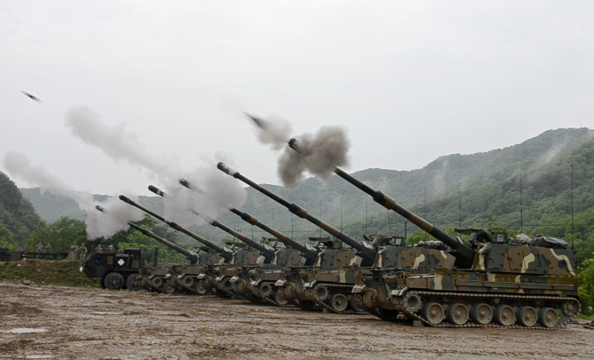
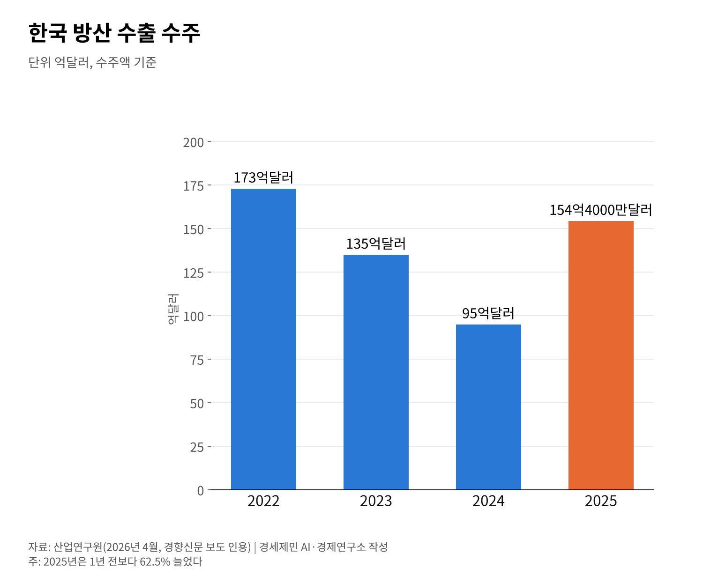

[한국경제 불편한 진실⑥] K방산 4사 영업이익 4조6324억원, 이익은 공급망 아래로 내려가나
2025년 방산 수출 수주 154억4000만달러, 1년 새 62.5% 늘어
SIPRI 2021~2025년 세계 무기 수출 9위, 점유율 3.0%
공정위 현장조사 1년, 2026년 10월 현재 제재 결과는 나오지 않았다
한국 방산 수출 수주는 2025년 154억4000만달러다. 산업연구원 보고서를 인용한 보도로 1년 전보다 62.5% 늘었다. 2023년과 2024년 두 해 줄었다가 다시 올라섰다.
방산 4사 실적도 커졌다. 한화에어로스페이스·현대로템·LIG넥스원·한국항공우주산업(KAI)의 2025년 영업이익 합계는 4조6324억원이다. 매출 합계는 40조4526억원이다.
이익이 공급망 아래까지 내려가는지는 다른 문제다. 원·하청 성과급 사례와 공정거래위원회 하도급 조사의 경과를 회사 발표와 보도로 짚는다.

방산 수출 수주 154억4000만달러, 다시 늘었다
산업연구원 집계로 방산 수출 수주는 2022년 173억달러였다. 2023년 135억달러, 2024년 95억달러로 두 해 내리 줄었다. 2025년에는 154억4000만달러로 돌아섰다.
국제 순위도 올랐다. 스톡홀름국제평화연구소(SIPRI)가 2026년 3월 낸 자료에서 한국은 2021~2025년 세계 무기 수출 9위다. 점유율은 3.0%다.
1년 전 판인 2020~2024년 기준으로는 10위, 점유율 2.2%였다. 2021~2025년 수출은 2016~2020년보다 24% 늘었다. 한국 무기 수출의 58%는 폴란드로 갔다.

4사 영업이익 4조6324억원, 올해도 이어진 흐름
2025년 매출은 한화에어로스페이스 26조6078억원, 현대로템 5조8390억원이다. LIG넥스원은 4조3094억원, KAI는 3조6964억원이다. 넷을 합치면 40조4526억원이다.
영업이익은 한화에어로스페이스가 3조345억원으로 가장 많다. 현대로템 1조56억원, LIG넥스원 3231억원, KAI 2692억원이 뒤를 잇는다. 한화에어로스페이스 수치는 감사 전 잠정치다.
2026년에도 흐름은 이어졌다. 2분기 4사 매출 합계는 13조1769억원이다. 영업이익 합계는 1조7520억원으로 한 분기에만 2025년 연간 이익의 3분의 1을 넘었다.
이익은 수출 계약에서 나온다
한화에어로스페이스 지상방산 부문은 2025년 매출 8조1331억원에 영업이익 2조129억원을 냈다. 영업이익률은 24.7%다. 회사가 2026년 3월 낸 IR 자료 수치다.
일감도 쌓여 있다. 지상방산 수주잔고는 2025년 말 37조2000억원이다. K9 자주포와 천무 다연장로켓을 사 간 폴란드가 한국 무기 수출의 가장 큰 고객이다.
내수 방산은 정부가 원가를 따져 일정 이윤을 얹어 주는 원가보상 방식으로 계약한다. 수출은 사는 나라와 값을 흥정해 정한다. 같은 회사 안에서도 계약 방식에 따라 이익의 크기가 갈린다.
하청 사례는 K9 공장이 아니라 조선소였다
방산 하청 임금을 다룬 대표 보도는 뉴스타파의 2024년 12월 기사다. 이 기사가 다룬 노동자는 한화오션 조선소에서 발판을 설치하고 도장을 하는 하청 노동자다.
K9 자주포는 한화에어로스페이스가 만든다. 한화오션은 같은 한화 계열이지만 이 글이 다루는 방산 4사에 들지 않는다. 조선소 사례를 K9 공장 이야기로 옮기면 사실과 다르다.
한화오션은 2024년 지급분에서 원청 성과급을 기본급의 150%, 하청은 75%로 매겼다. 회사는 2025년 12월 11일 협력사 직원 약 1만5000명에게 원청과 같은 비율로 주겠다고 발표했다.
발표가 실제 지급으로 이어졌는지는 따로 지켜봐야 한다. 원·하청 성과급 비율은 이익이 공급망으로 얼마나 흐르는지 보여 주는 몇 안 되는 숫자다.
공정위 조사 1년, 제재 결과는 아직
공정거래위원회는 2025년 11월 3일 창원의 한화에어로스페이스와 사천의 KAI 본사를 현장조사했다. 혐의는 기술자료 유용, 대금 미지급, 단가 인하다. KAI는 공정거래법 위반 혐의도 받는다.
2026년 10월 현재 하도급 제재 결과는 보도되지 않았다. 법원은 10월 9일 한화 측의 자료제출명령 효력정지 신청을 받아들였다. 공정거래위원장은 현장 조사가 무력화됐다며 유감을 밝혔다.
하도급 벌점이 쌓여 방산 입찰 제한 대상이 된 곳은 한화오션과 HD현대중공업이다. 방산 4사는 아니다. 방위사업청은 2025년 7월 7일 계약특수조건 표준에 계약이행 일괄양도 금지 조항을 넣었다.
정부는 2025년 10월 20일 서울 ADEX 방위산업 발전 토론회에서 공정위 인력을 늘리겠다고 밝혔다. 원가 후려치기 같은 지배적 지위 남용에는 치명적 불이익을 주겠다는 방침이다.
수출 수주는 다시 늘었고 4사 영업이익은 4조원을 넘었다. 한화오션은 원·하청 성과급 비율을 맞추겠다고 했다. 공정위 조사는 법원 공방으로 길어지고 있다.
호황의 크기는 이미 숫자로 나와 있다. 그 이익이 협력사와 하청 노동자에게 얼마나 닿는지를 보여 줄 지표가 나란히 나와야 둘을 같은 저울에 올릴 수 있다.
참고문헌
기관 자료
- 스톡홀름국제평화연구소(SIPRI), 「Trends in International Arms Transfers, 2025」, 2026년 3월. https://www.sipri.org/sites/default/files/2026-03/fs_2603_at_2025.pdf
- 스톡홀름국제평화연구소(SIPRI), 「Trends in International Arms Transfers, 2024」, 2025년 3월. https://www.sipri.org/sites/default/files/2025-03/fs_2503_at_2024.pdf
- 한화에어로스페이스, 「JP Morgan Korea Conference 참석 IR 자료」(잠정·감사 전), 2026년 3월 5일. https://file.alphasquare.co.kr/media/pdfs/company-ir/20260305한화에어로스페이스_JP_Morgan_Korea_Conference_참석.pdf
언론 보도
- "방산 빅4 2025년 실적", 메트로신문, 2026년 2월 24일. https://www.metroseoul.co.kr/article/20260224500455
- "방산 4사 수주잔고", 파이낸셜뉴스, 2026년 4월 8일. https://www.fnnews.com/news/202604080847361957
- "방산 4사 2분기 실적", 데일리안, 2026년 8월 10일. https://www.dailian.co.kr/news/view/1676727
- "방산 4사 2분기 합산 영업이익", MTN, 2026년 8월 6일. https://news.mtn.co.kr/news-detail/2026080616324578202
- "산업연구원, 2025년 방산 수출 수주 154억4000만달러", 경향신문, 2026년 4월 21일. https://www.khan.co.kr/article/202604211506011
- "공정위, 한화에어로스페이스·KAI 현장조사", 경향신문, 2025년 11월 3일. https://www.khan.co.kr/article/202511031711001/
- "공정위와 한화 자료제출명령 공방", MTN, 2026년 9월 23일. https://news.mtn.co.kr/news-detail/2026092314172673013
- "하도급 벌점 초과로 방산 입찰 제한", 뉴스토마토, 2025년 3월 17일. https://newstomato.com/ReadNews.aspx?no=1256161
- "방위사업청, 계약특수조건 표준 개정", 쿠키뉴스, 2025년 7월 7일. https://www.kukinews.com/article/view/kuk202507070112
- "ADEX 방위산업 발전 토론회", 쿠키뉴스, 2025년 10월 20일. https://www.kukinews.com/article/view/kuk202510200215
- "한화오션 협력사 성과급 원청과 같은 비율", 시대일보, 2025년 12월 16일. https://www.sidae.com/article/2025121610412427362
- "한화오션 하청 노동자 급여명세서", 뉴스타파, 2024년 12월 31일. https://newstapa.org/article/CTwwF
[사진 출처]
- [사진1] 미 육군 Dasol Choi 일병, 「Coordinated thunder - 1 of 7.jpg」, 2016년 5월 10일, 위키미디어 공용, 퍼블릭 도메인(미국 연방정부 저작물). https://commons.wikimedia.org/wiki/File:Coordinated_thunder_-_1_of_7.jpg
- [도표1] 경세제민 AI·경제 연구소 작성. 자료 산업연구원(경향신문 2026년 4월 21일 인용)
© 경세제민 AI·경제 연구소. 인용할 때는 출처를 밝혀 주십시오.